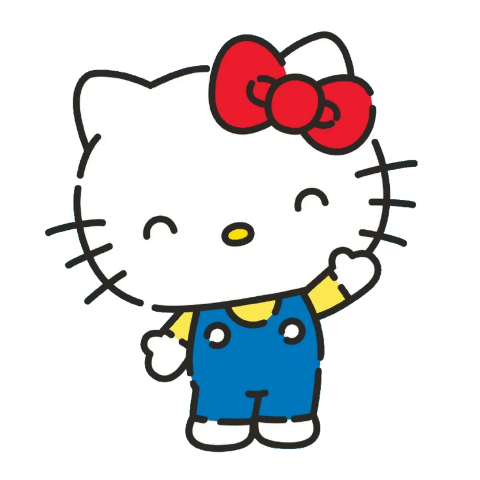

Hello kitty
Hello Kitty (ハローキティ, Harō Kitī), also known by her full name, Kitty White (キティ・ホワイト, Kitī Howaito), is a fictional character produced by the Japanese company Sanrio, created by Yuko Shimizu, and designed by Yuko Yamaguchi.
Читати більше...